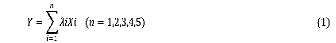
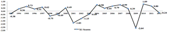
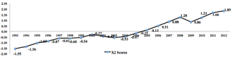
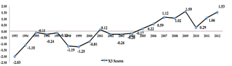
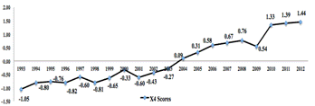
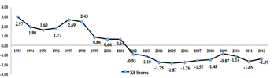
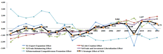

Paper Title :
THE U.S. NATIONAL EXPORT STRATEGY 1993-2012:
SYSTEMATICAL EVALUATION AND EMPIRICAL STUDY
Abstract
The “National Export Strategy (NES)” was first introduced by the Clinton Administration in 1993 and has continued through to the current administration of Obama to become a complete strategic system. To systematically evaluate the strategic and comprehensive effect of NES, this paper builds an evaluation model and index system with the methods of Analytic Hierarchy Process and Time Series Principal Component Analysis for the time period 1993-2012. The empirical study shows the positive and persistent effect of NES on export expansion, as well as job creation, trade rebalancing and trade liberalization. The study shows a limited and weakening effect on enhancing the international competitiveness, thus restricting the rising of overall strategic effect of NES. The study also illustrates that the current NEI as the core of export strategy of Obama’s Administration acts stronger than the previous strategies applied generally, but with a fast decreasing growth rate of export, whether the strong, sustainable and positive performance can be achieved in the near future, is still facing uncertainty.
Author
Ziying Cao
School of Economics and Management,
Wuhan University, Wuhan, China
Paper Transcript of Paper Titled :
THE U.S. NATIONAL EXPORT STRATEGY 1993-2012:
SYSTEMATICAL EVALUATION AND EMPIRICAL STUDY
The U.S. National Export Strategy 1993-2012:
Systematical Evaluation and Empirical Study
Ziying Cao
School of Economics and Management,
Wuhan University, Wuhan, China
Abstract—The “National Export Strategy (NES)” was first introduced by the Clinton Administration in 1993 and has continued through to the current administration of Obama to become a complete strategic system. To systematically evaluate the strategic and comprehensive effect of NES, this paper builds an evaluation model and index system with the methods of Analytic Hierarchy Process and Time Series Principal Component Analysis for the time period 1993-2012. The empirical study shows the positive and persistent effect of NES on export expansion, as well as job creation, trade rebalancing and trade liberalization. The study shows a limited and weakening effect on enhancing the international competitiveness, thus restricting the rising of overall strategic effect of NES. The study also illustrates that the current NEI as the core of export strategy of Obama’s Administration acts stronger than the previous strategies applied generally, but with a fast decreasing growth rate of export, whether the strong, sustainable and positive performance can be achieved in the near future, is still facing uncertainty.
Keywords- NES; Strategic Evaluation System ; NEI; Analytic Hierarchy Process(AHP); Time Series Principal Component Analysis (TSPCA)
Introduction
Since the first formal "National Export Strategy (NES) was launched by Clinton’s Administration in 1993 to the "National Export Initiative (NEI)" as the core of the new National Export Strategy after the financial crisis released by Obama’s Administration in 2010, the U.S. Export Strategy has formed a very complete strategy system.
Numerous researchers have discussed the effects of the strategic measures of NES, which have led to some consistent conclusions. Caroline Freund（2014）of the Peterson Institute of International Economics rethought the NEI, suggesting that supporting small and medium sized businesses instead of large exporters is a very important reason that results in the failure of realization of the NEI’s target of doubling exports in the end of 2014. Meanwhile, the role of the Ex-Import Bank, which is authorized to provide financial support to export companies, has been questioned since the 1990s. The tracking studies of Ian and Sallie in the CATO Institutes suggest that the Ex-Import Bank should be removed because the financial support did not play any positive role in correcting market failure, rebalancing the trade deficit, and creating jobs. However, the Free Trade Agreements（FTAs）and the promoting measures of trade and Foreign Direct Investment (FDI) liberalization were significant to the U.S. export (Jeffrey，2002), which has been shown again by Adler and Clyde（2009）. Their empirical study of 1980-2006 shows that 35%-40% American exports received benefits.
With a large amount of papers focused on the roles of specific strategic measures, limited empirical research has been conducted of the NES as a strategy in the last two decades. Chinese economists, such as Xiao (1995), Jia (2002) and Zhang (2009) theoretically analyzed the background, policies, and influence of NES in different presidential periods, as the new NES were released. He Jan (2005) selected government subsidies, government policies and other indicators to study the evolution process of NES since the 1970s. As to the NEI, with the ambitious but realistic goal, Peter Dixon’s study on the basis of USAGE dynamic model in 2011, which is the most notable empirical study of NEI, demonstrated the measures of NEI would be helpful to reach the goals and reduce the negative influence of economic recession to the employment (Dixon, 2011). However, these are the strategic analysis in advance, rather than the evaluation
As to the general principle of strategy formulation and implementation, strategic evaluation is a necessary process of the strategic execution and correction. Although the "World Trade Index" (WTI) developed by the World Bank, the "Trade and Development Index" (TDI) used by United Nations Conference on Trade and Development (UNCTD), and Global Competitiveness Index (GCI) created by the Word Economy Forum (WEF) cover the comprehensive evaluation of U.S. trade and international competitiveness, they are more suitable for the horizontal comparison among the countries rather than NES evaluation and historical analysis. The U.S. Trade Coordination and Promotion Committee (TPCC) keeps tracking the implementation of priorities in the NES report since 1995 , but the official strategic evaluation indicators and metrics are too separated to show the comprehensive effect of NES.
Further, the qualitative and static analysis is the main research method in this area, rather than quantitative and dynamic analysis, which is obviously inadequate to evaluate NES scientifically and systematically, and to show the changes in the last 20 years as well.
The main purpose of this paper is to establish a strategic evaluation system of NES to quantitatively evaluate its comprehensive effect since 1993. Meanwhile, a strategic evaluation system of NES in this paper is expected to be the tentative trial, which would provide reference for further research.
Strategic Evaluation System
Evaluation Model
Since 1993, the U.S. national export strategy has been through three periods: after the Clinton’s Administration, the George W Bush’s Administration, and the Obama’s Administration. The policy packages are different in each period, but the strategic goals have never been changed and the measures have several aspects in common: 1) expanding the export, which is the primary goal of NES, would be an important driving force of economic growth; 2) Creating jobs is the second strategic target, because the productivity and average wages are higher in the export sectors; 3) Bilateral (multilateral) negotiations of the liberalization of trade and investment is crucial to open the global market for the American corporations; 4) Enlarging export has been considered as the main way to reduce the trade deficit; 5) Cultivating and Keeping the international competitiveness of the key sectors, including agricultural products, advanced manufactured products and services, is the long-term goal of NES; and 6) A fair and free trade environment is necessary for the realization of the strategy.Based on the descriptions of NES above, this paper constructs an evaluation model:

"The comprehensive effect of NES" is the target variable Y which can be described by the evaluating scores of each year from 1993-2012. Xi(i=1.2.3.4.5)are the primary indicators’ scores to measure the strategic effects in five import aspects: "export expansion" "job creation" "trade rebalancing" "trade and investment liberalization" and "international competitiveness promotion". Further, the secondary indicators Xij(j=1.2….n) are designed to represent primary indicator Xi and λiis the weight of Xi.
Indicators
Table Type Styles
----- [Insert Table Ⅰ about here] -----
Method and Data
Principal component analysis (PCA) and analytic hierarchy process (AHP) are two common systematic evaluation methods. The PCA is suitable for dealing with quantitative indicators by reducing dimensions to extract the principal components that can reflect most of the original data information. Finally， the comprehensive scores can be calculated according to the weight of each principal component and horizontally compared. Time Series Principal Component Analysis (TSPCA) was developed on the basis of PCA to analyze the time series data so that the scores of target variable would implicate the dynamic characteristics. But TSPCA requires that the sample size should be 3-5 times the indicator numbers, which cannot be met in this paper with 23 secondary indicators and only 20 samples. On the other hand, AHP is suitable for the analyzing indicators in a large amount and many dimensions. However, the weight of each indicator is obtained by subjective assignment, which will be less scientific and objective. Therefore, learning from the processing method of Cao Jianyun (2012), this paper will use TSPCA to deal with the secondary indicators (Xij) in five groups, first to obtain the component scores of primary indicators (Xi), then use the AHP to calculate comprehensive scores of the target variable Y, which describes the strategic effect of Export Strategy.
Data in this paper are from WTO Statistics Database Time Series and BEA from 1992-2013. The KMO test values of five groups of 23 secondary indicators are 0.733, 0.661, 0.659, 0.763 and 0.675, and P≤0.05 in the Bartlett tests, which means the five groups of secondary indicators are suitable for TSPCA. In the process of Dimension Reduction - Factor in SPSS 20.0 will automatically standardize the original data (Xij) into ZXij to eliminate the influence of dimensional difference.
Empirical Study
Evaluation on the Export Expansion Effect
According to the principle of principal component extraction that the eigenvalues should be greater than 1, one principal component named F1 can be extracted from X11,X12 and X13 , and its variance contribution rate is 91.19%, which means it retains 91.19% of the original data information (See Table 2). Meanwhile, The factor loading of F1 on X11,X12 and X13 are 0.964, 0.973 and 0.927 respectively, which means the scores of F1 can reflect comprehensive effect of the strategic measures of export expansion.
Comp onent |
Initial Eigenvalues |
Extraction Sums of Squared Loadings |
||||
Total |
% of Variance |
Cumulative % |
Total |
% of Variance |
Cumulative % |
|
1 |
2.736 |
91.19 |
91.19 |
2.736 |
91.19 |
91.19 |
2 |
0.207 |
6.89 |
98.079 |
|||
3 |
0.058 |
1.921 |
100 |
|||
X11-X13 Variance Explained and Principle Component Extraction
Source：SPSS20.0 results

Figure 1 Scores of Export Expansion Effect
Source：SPSS20.0 results
Note:Two decimal places are retained. The scores represent the relative level of the effect, rather than absolute level. Positive score means the effect is better than the average performance, negative score means worse than the average performance
As to the component score coefficient matrix, the F1 can be expressed as：F1=0.352 ZX11+0.356 ZX12+0.339 ZX23. Using the standardized data, we can calculate the score of F1 and further obtain the score of X1 (See Figure 1).
We can analyze the export expansion effect of NES from Figure 1 as follows: First, the effect scores in 1998, 2001 and 2008 sharply drops, which reflect that the U.S. export is vulnerable to the internal and external shock, such as the Asian financial crisis in 1998, "911" event in 2001 and the American financial crisis in 2008. It also reveals the close economic relations between the U.S. and world.
However, the rapidly increase of effect scores after 1998, 2001 and 2008 demonstrates that the export promotion measures of NES are very powerful and timely to reverse the downturn of export.
Compared with the effect in previous period, while facing more severe economic crisis, NEI as the core of NES in the Obama’s first presidency shows much stronger force to enlarge the exports more rapidly than ever. On the other hand, excluding the impact of special events, the export expansion effect in Clinton’s and George W. Bush’s presidential terms implicates the feature of sustainability. But the sharp decrease of the export growth rate from 2010, indicate the sustainability of the strong export promotion effect remains uncertain.
Evaluation on the Job Creation Effect
One principal component named F2 can be extracted from the second group of secondary indicators, which keeps 87.439% of the original data information. The factor loading of F2 on X21, X22 and X23 are 0.858, 0.969 and 0.974 so that the score of F2 can present the effect of NES on job creation. The component function of F3 is：
Figure 2 Scores of Job Creation Effect
Source：SPSS20.0 results
Note: Two decimal places are retained.
Scores of X2 in Figure 2 demonstrate that NES has played increasing positive role in creating the jobs from 1993. It proves that the growth of export is indeed the important way to raise the employment. Thus, the job creations should be pursued as the one of the key goals of NES in the future. Further, the average scores of X2 in the Clinton’s presidency (1993-2000), Bush’s first presidential term (2001-2004), Bush’s second presidential term (2005-2008) and Obama’s first presidential term (2009-2012) are -0.85, -0.39, 0.7 and 1.4. It shows that the stimulating effect of employment of NES since 2005 is better than the previous stages. Especially, in response to the financial crisis in 2008, the NEI has much stronger impact on speeding up the economic recovery and creating jobs.
Evaluation on the Trade Rebalancing Effects
With the varimax rotation of X31, X32 and X33, 3 principle components named F31 and F32 are extracted that the cumulative variance contribution rate reaches 83.492% (See Table 3). F31 has high factor loading on the indicator of “Changing rate of trade deficit (X31)” that can be named as “Changing rate of trade deficit factor”, while the F32 has high factor loading on the secondary indicators of “Goods trade deficit (X32)”and “Goods trade deficit (X33)” that can be named as “Trade deficit factor”。The component functions of F31 and F32 are：
F31= 0.264 ZX31-0.594 ZX32+0.665 ZX33
F32= 1.088 ZX31+0.093 ZX32-0.205 ZX33
Comp onent |
Initial Eigenvalues |
Extraction Sums of Squared Loadings after Rotation |
||||
Total |
% of Variance |
Cumulative % |
Total |
% of Variance |
Cumulative % |
|
1 |
1.865 |
62.169 |
62.169 |
62.169 |
1.474 |
49.124 |
2 |
0.64 |
21.324 |
83.492 |
83.492 |
1.031 |
34.368 |
3 |
0.495 |
16.508 |
100 |
|||
Table Type StylesX31-X33 Variance Explained and Principle Component Extraction
Source：SPSS20.0 results
X31-X33 Rotated Component Matrix and Component Score Coefficient Matrix
Source：SPSS20.0 results
Extraction Method: Principal Component Analysis.
Factor Loading |
Component Score Coefficient Matrix |
|||
Component |
Component |
|||
F31 |
F32 |
F31 |
F32 |
|
X31 |
0.233 |
0.971 |
0.264 |
1.088 |
X32 |
-0.822 |
-0.243 |
-0.594 |
0.093 |
X33 |
0.862 |
0.168 |
0.665 |
-0.205 |
Rotation Method: Varimax with Kaiser Normalization.
The scores of X3 can be calculated according to the formula X3=1.474* F31/(1.474+1.031) +1.031* F32/(1.474+1.031)：
Figure 3 Scores of Trade Rebalancing Effects Effect
Source：SPSS20.0 results
Note: Two decimal places are retained.
During the last 20 years, NES’s impact on reducing the huge trade deficits of U.S. was gradually getting stronger. The average scores of X3 in the four phases, from Clinton’s Administration to Obama’s first presidential term, are -0.86, -0.56, 0.74 and 1.12, suggesting that the trade rebalancing effect of NES became much better after 2005 and especially even more powerful with export-promoting measures NEI.
Evaluation on the Trade and Investment Liberalization Effect
Assessing the effect of trade and investment liberalization, we extracted two principal components F41 and F42, of which the cumulative variance contribution rate reaches 98.037% with varimax rotation (See Table 5). Table 6 shows that the factor loading of F41 is high on “FTA partner (X41)”, “Amount of U.S. FDI (X44)” and “Amount of FDI from abroad (X45)” that can be named as “Investment liberalization factor”, while the F42 has high factor loading on “the growth rate of export to non-traditional market (X42)” and “the proportion of export to non-traditional market (X43)” that can be named as “Trade liberalization factor”. The component functions of F41 and F42 are：
F41=0.253ZX41-0.083ZX42+0.25ZX43+0.262ZX44+0.258ZX45
F42=-0.023ZX41+1.005ZX42+0.037ZX43-0.05ZX44-0.046ZX45
Variance Explained and Principle Component Extraction
Comp onent |
Initial Eigenvalues |
Extraction Sums of Squared Loadings after Rotation |
||||
Total |
% of Variance |
Cumulative % |
Total |
% of Variance |
Cumulative % |
|
1 |
3.933 |
78.654 |
78.654 |
3.877 |
77.549 |
77.549 |
2 |
0.969 |
19.383 |
98.037 |
1.024 |
20.488 |
98.037 |
3 |
0.074 |
1.481 |
99.518 |
|||
4 |
0.017 |
0.335 |
99.853 |
|
|
|
5 |
0.007 |
0.147 |
100 |
|
|
|
Source：SPSS20.0 results
Factor Loading |
Component Score Coefficient Matrix |
|||
Component |
Component |
|||
F31 |
F32 |
F31 |
F32 |
|
X41 |
0.973 |
0.078 |
0.253 |
-0.023 |
X42 |
0.081 |
0.997 |
-0.083 |
1.005 |
X43 |
0.983 |
0.138 |
0.25 |
0.037 |
X44 |
0.996 |
0.054 |
0.262 |
-0.049 |
X45 |
0.983 |
0.056 |
0.258 |
-0.046 |
X41-X45 Rotated Component Matrix and Component Score Coefficient Matrix
Source：SPSS20.0 results
Extraction Method: Principal Component Analysis.
Rotation Method: Varimax with Kaiser Normalization-
The scores of X4 can be calculated according to the formula: X4=0.705 F41+0.295 F42, as shown in Figure 4：
Figure 4 Scores of Trade and Investment Liberalization Effect
Source：SPSS20.0 results
Note: Two decimal places are retained.
The scores in Figure 4 score illustrates that the bilateral (multilateral) free trade arrangements are increasingly helpful to promote trade and investment liberalization all over the world. Meanwhile, the average scores of the effect in Clinton’s presidency and George w. Bush's first term are -0.73 and -0.3 and became positive in the last two phases from 2005, reaching 0.58 and 1.18, which means NES measures after 2005 are obviously efficient and effective for American companies to surpass the barriers and explore the global market.
Evaluation on the International Competitiveness Promotion Effect
International market share, TC Index and RCA, which are the most important index, are selected to measure the variety of the U.S. competitiveness under the NES. The principle component F51 and F52 are extracted while keeping 86.919% data information (See Table 7). F51 can be named as “Comparative advantages factor” as to its high factor loading on “International market share (X51, X52, X53)” and “RCA (X57, X58, X59)”. F52 can be named as “Competitive advantages factor” as to its high factor loading on “TC (X54, X55, X56)” (See Table 8). The component functions of F51 and F52 are：
F51=0.23 ZX51+0.143 ZX52+0.246 ZX53+0.015 ZX54-0.116 ZX55-0.048 ZX56+0.105 ZX57-0.281 ZX58-0.188 ZX59
F52=-0.029 ZX51+0.092 ZX52-0.078 ZX53+0.237 ZX54+0.339 ZX55+0.286 ZX56+0.056 ZX57+0.276 ZX58+0.034 ZX59
X51-X59 Variance Explained and Principle Component Extraction
Comp onent |
Initial Eigenvalues |
Extraction Sums of Squared Loadings after Rotation |
||||
Total |
% of Variance |
Cumulative % |
Total |
% of Variance |
Cumulative % |
|
1 |
5.575 |
61.94 |
61.94 |
4.375 |
48.607 |
48.607 |
2 |
2.248 |
24.979 |
86.919 |
3.448 |
38.312 |
86.919 |
3 |
0.65 |
7.219 |
94.138 |
|||
4 |
0.348 |
3.865 |
98.002 |
|
|
|
5 |
0.117 |
1.302 |
99.304 |
|
|
|
6 |
0.045 |
0.502 |
99.806 |
|
|
|
7 |
0.009 |
0.105 |
99.911 |
|
|
|
8 |
0.007 |
0.074 |
99.985 |
|
|
|
9 |
0.001 |
0.015 |
100 |
|
|
|
Source：SPSS20.0 results
Table Type StylesX51-X59Rotated Component Matrix and Component Score Coefficient Matrix
Source：SPSS20.0 results
Extraction Method: Principal Component Analysis.
Rotation Method: Varimax with Kaiser Normalization.
The scores of X5 can be calculated according to the formula: X5=0.559 F51+ 0.441 F52as shown in Figure 5.
Figure 5 Scores of International Competitiveness Promotion Effect
Source：SPSS20.0 results
Note: Two decimal places are retained.
The effect scores in Figure 5 illustrates a very obviously weakening trend from 1993，which even fell below the average level after 2001. Although the scores rose slightly under the NEI, but is still not optimistic.
Factor Loading |
Component Score Coefficient Matrix |
|||
Component |
Component |
|||
F31 |
F32 |
F31 |
F32 |
|
X51 |
0.959 |
0.267 |
0.23 |
-0.029 |
X52 |
0.773 |
0.545 |
0.143 |
0.092 |
X53 |
0.95 |
0.123 |
0.246 |
-0.078 |
X54 |
0.445 |
0.843 |
0.015 |
0.237 |
X55 |
0.033 |
0.983 |
-0.116 |
0.339 |
X56 |
0.246 |
0.911 |
-0.048 |
0.286 |
X57 |
0.55 |
0.362 |
0.105 |
0.056 |
X58 |
-0.787 |
0.503 |
-0.281 |
0.276 |
X59 |
-0.879 |
-0.419 |
-0.188 |
-0.034 |
Comprehensive Evaluation on the NES
Judgment Matrix and Weight of Primary Indicators
Source: Processed by Experts Grading Method
X1 |
X2 |
X3 |
X4 |
X5 |
Weight ( λi ) |
|
X1 |
1 |
2 |
4 |
3 |
4 |
0.495 |
X2 |
1/2 |
1 |
3 |
2 |
3 |
0.308 |
X3 |
1/4 |
1/3 |
1 |
1/2 |
1 |
0.105 |
X4 |
1/3 |
1/2 |
2 |
1 |
2 |
0.183 |
X5 |
1/4 |
1/3 |
1 |
0.5 |
1 |
0.105 |
This paper constructs the judgment matrix under the AHP to determine the weight (λi,) of Xi (See Table 9). The random consistency ratio (CR) of the judgment matrix is 0.007, meeting the requirements of CR≤0.1. Accordingly the weights of Xi are obtained as 0.495, 0.308, 0.105, 0.183 and 0.105, reflecting the relative importance of each primary indicator in the strategic evaluation. The rank of the importance in turn is export expansion, job creation, trade and investment liberalization, trade rebalancing and the international competitiveness promotion, in line with the description in the NES reports.

Figure 6 Scores of Comprehensive Effect of NES
Source：SPSS20.0 results
Note: Two decimal places are retained.
With the scores of the five primary indicators (Xi), the comprehensive effect scores (Y) of NES can be calculated by the formula (1) (See Figure 6).
First, the steady increase of strategic comprehensive scores reflects that the overall strategic effect of NES was gradually and consistently improved during last 20 years. It is worth noting that the effect after 2005 is obviously better than the previous phase.
Second, facing the internal and external negative influence in 1998, 2001 and 2009, the various strategic measures could promote the export growth back to normal or even a higher level rapidly. In the first year of NEI, the comprehensive score even surpasses the highest level before the crisis, which shows the much stronger ability in this aspect than the ever.
Third, comparing all the scores, it is found that the effects of NES on “job creation” and “trade and investment liberalization” are more stable than other 3 aspects, which have also been increasingly strengthened. The scores of “Export expansion” and “Trade rebalancing” are almost consistent to the comprehensive scores, revealing that the “export expansion” is the most critical factor to determine the NES effect, and rebalancing the trade as well. At the same time, the decrease of the “International Competitiveness Promotion ” effect scores significantly restrict the improvement of general effect of NES.
Fourth, as to the NEI, the overall effect should be praised. Among the five main targets, the good performance on the supporting employment, put forward the trade liberalization, and reducing trade deficit has played a positive role to strengthen the comprehensive effect. But the rapid decrease of export growth rate and poor performance on maintaining the international competitiveness should be responsible for the downward trend of the NEI effect scores. Thus, there are many big challenges to sustain the NEI positive effect in the next phase.
Conclusion
This paper establishes a strategic evaluation system of NES with 23 target-related indicators. Using the methods of AHP and TSPCA, an empirical study has been conducted to analyze its comprehensive effect from 1993-2012 under the evaluation model, which led to the conclusions as follow:
Generally speaking, the evaluation illustrates that the U.S. export strategy has been through an optimized process since 1993. It also reflects the positive and sustainable performance of the policies and measures in the long term. Meanwhile, as the relations between economies have become increasingly close, export is more vulnerable to the impact of domestic economic fluctuations and negative economic environment of the partners. However, the production and implementation of NES in last 20 years were timely and effective. Therefore, the overall strategic effect deserves affirmation and praise.
In terms of the realization of the multiple strategic targets, as the primary one, the realization of export expansion will always significantly and directly affect the overall effect NES, as well as the balanced and healthy economic growth and employment. The package of the export promotion measures, such as financing of enterprises and improving the government's export services, has played a positive role to enlarge the U.S. export. Further, the trade and investment liberalization measures are more and more powerful to open the global market for the exporters. By contrast, its limited and weakening impact on enhancing the international competitiveness could be considered as a big obstacle to strengthen the overall effect of NES. It also reflects that the trade promotion policies and measures cannot fundamentally improve the international competitiveness, which is determined by the revitalization of the real economy. More powerful industrial strategy and policies are needed along with the NES.
As to the NEI, although it is clearly unrealistic to reach the goal of “doubling export in the end of 2014”. Its comprehensive performance on export expansion, creating jobs, alleviating trade deficit and advancing trade liberalization is more positive and obviously stronger than the previous governments. With the release of NEI/NEXT in the May of 2014, which is meant to optimize the government export service to the enterprises, whether the strong, sustainable and rapid export expansion can be achieved in the near future is still facing uncertainty.
acknowledgement
I wish to express thanks to Professor Zhang Bin from School of Economics and Management of Wuhan University for assistance with this research.
References
[1] Adler, Matthew and Gary Clyde Hufbauer. “Policy Liberalization and
USMerchandise Trade Growth, 1980–2006”. Peterson Institute for
International Economics, Working Paper Series No. WP09-2(2009).
[2] Dixon, Peter B. And Maureen T. Rimmer. “Doubling U.S. Exports Under the President’s National Export Initiative: Is it Realistic? Is it Desirable?” Centre of Policy Studies. Monash University, General Paper No. G-220(2011).
[3] Freund, Caroline. “Rethinking the National. Export Initiative”. Peterson Institute for International Economics, Working Paper Series No. PB14-7(2014).
[4] He, Jian. “The Development of the American National Export Strategy since 1970’s”. Research on Financial and Economic Issues, 12 (2005): 80-90.
[5] James, Sallie. Ending the Export-Import Bank. CATO Institute, October 2012 http://www.downsizinggovernment.org/export-import-bank (website visiting: March 20, 2014).
[6] Jia, Changlu, “Analysis of the American National Export Strategy”. Jianghan Tribune 6 (2002):44-46.
[7] Luo, Guangbin, He Binghui, Wen Xiaochen, Chen Wei. “The Sustainable Development of Chongqing: Empirical research with Time Sequential Principal Component Analysis”, Journal of Southwest Agricultural University (Social Science Edition) 4 (2008):7-11.
[8] USTR, “U.S. National Export Strategy”. 1995, 2000, 2002-2012.
(website visiting: Feb. 20, 2014).
[9] Wang, Xia, Lei Wang, and Zhiling Wang. “The Economic Development of Guizhou Province: Empirical research with Time Sequential Principal Component Analysis”, Journal of Wuhan University of Technology 28 (2006):150-152.
[10] Xiao, Licai, “The New American Strategy of Exports”. Studies of the World Economy 1 (1995): 44-47.
- [11] Zhan, Hanlin, and Lei Wei. “Research on the Policies and Measures of U.S. Double Export in Five Years”, The Asia-pacific Economy 4 (2010): 43-47.
Authors Profile
Professor Ziying Cao worked as a professor at Wuchang University of Science and Technology (WUT), Wuhan, China for 7 years, and got into her Doctoral Student in Economics and Management at Wuhan University last year. She has served as visiting professor in the School of Business at Dixie State University (DSU), St George, Utah, USA and was extremely well-received as a superior teacher while at DSU. She is very fluent in both Mandarin and English languages. She is an experienced and well respected educator and researcher with years of university teaching experience. She received the “Outstanding Prize” Award in the Third Teaching Contest in WUT. She received her Masters of Economics degree from Zhongnan University of Economy and Law, as well as a Bachelor degree in Economics from Wuhan Textile University. Ziying Cao’s current academic studies are concentrated in Economics and Export Strategies of China and the United States.
- Table Ⅰ Strategic Evaluation System of NES
Target |
Primary Indicators |
Secondary Indicators（Unit） |
Meaning of the indicators |
Formula & Data |
Strategic Effect of National Export Strategy (Y) |
Export Expansion (X1) |
Export contribution rate to GDP growth X11（%） |
Measuring the pull function of exports to GDP growth: the higher contribution rate means the stronger export expansion. |
Data from U.S. Bureau of Economic Analysis（BEA） |
Growth rate of goods export X12（%） |
Measuring the growing rate of export of goods/service: higher rate means better expansion effect. |
（exports of goods this year- exports last year）/ exports last year |
||
Growth rate of service export X13（%） |
（exports of service this year- exports last year）/ exports last year |
|||
Job Creation (X2) |
Jobs created by export X21（million） |
Measuring the quantity of jobs created by export: bigger number means stronger effect on job creation. |
Data from BEA |
|
Export value created by each export related job X22（million US$） |
Measuring the quality of jobs created by export: higher value means higher productivity and export value related to each job. |
|||
Personal income X23（billion US$） |
Measuring the influence of export to increase the personal income (PI): higher PI means more positive role of export to raise the living level. |
|||
Trade Balancing (X3) |
Changing rate of trade deficit X31（%） |
Measuring the situation of trade deficit: With the positive treatment, positive data means that the deficit is alleviated, and the negative data means it is deteriorating. |
（trade deficit this year-trade deficit last year）/ trade deficit last year |
|
Goods trade deficit X32（billion US$） |
Measuring the scale of goods trade deficit: bigger absolute value means worse situation |
Data from BEA |
||
Service trade surplus X33（billion US$） |
Measuring the scale of service trade surplus: bigger absolute value means better situation |
|||
Trade and Investment Liberalization (X4) |
Quantity of FTA partners X41 |
Measuring the progress of liberalization of trade and investment: more FTA partners means faster liberalization and less barriers. |
Data from BEA |
|
The growth rate of export to non-traditional market * X42（%） |
Measuring the influence of FTAs on non-traditional market explosion: higher growing rate means better effect of FTAs. |
（export to non-traditional market this year- export to non-traditional market last year / export to non-traditional market this year |
||
Proportion of export to non- traditional market X43（%） |
Measuring the influence of FTAs on non-traditional market explosion：higher proportion means better effect of liberalization measures. |
export to non-traditional market / export to the world |
||
Amount of U.S. FDI X44 （trillion US$） |
Measuring the influence of liberalization measures on FDI：the larger amount means better effect |
Data from BEA |
||
Amount of FDI From abroad X45 （trillion US$） |
Measuring the influence of liberalization measures on FDI from abroad：the larger amount means better openness of the U.S. market |
|||
International Competitiveness Promotion (X5) |
The international market share of advanced manufactured products**X51（%） |
Measuring the export competitiveness of American advanced manufactured products, agricultural products and service: higher share means more competitive |
export of products or service of America / export of products or service of the world |
|
The international market share of agricultural products X52（%） |
||||
The international market share of service X53（%） |
||||
TC Index of advanced manufactured products X54 |
Measuring the export advantage of American advanced manufactured products, agricultural products and service, ranging from-1 to 1:TC>0 means it is competitive, the closer to 1，the stronger competitive it is. TC<0 means it is not competitive, the closer to -1, the stronger disadvantageous it is. |
Net export of products or service / export of products or service to the world |
||
TC Index of agricultural products X55 |
||||
TC Index of service X56 |
||||
RCA of advanced manufactured products X57 |
Measuring the Comparative advantage American advanced manufactured products, agricultural products and service, ranging from 0 to 1: closer to 1 means stronger Comparative advantage. |
[export value of products or service of America / export of America ] [export value of the same products or service of the world / export of the world] |
||
RCA of agricultural products X58 |
||||
RCA of service X59 |
Source: Made by authors
Note： * According to the NES Report from 1993, America's traditional market mainly refers to the European countries and Japan. So the non-traditional markets in this paper means all the countries and regions except European countries and Japan, which also covers all the partners under the bilateral and regional trade arrangements.
** The advanced manufactured products in the U.S. International Trade Statistics include advanced materials, aviation equipment, biotechnology, electronics, flexible manufactured equipment, information and communications equipment, life sciences, photoelectrons and weapons, which are in the same range of Chemicals and Transportation Equipment in the WTO Statistics Database. In order to unify data source of American advanced manufactured products, agricultural products and service, this paper uses the all the data from WTO database.
“Progress Report on the Recommendations” in the Appendix of TPCC Reports: National Export Strategy 1995-2012.
For example, to maintain the fair trade environment, developing Labor laws and regulations and environmental standards are the main methods used in the Clinton’s Administration. The Bush’s Administration preferred “Anti-Dumping, Countervailing and safeguard measures”, but the protection of intellectual property rights is becoming the most frequent way in Obama’s presidency. As another example, developing information technology, medical equipment, biological science and technology were the top priority before 2005. Currently the present government is focusing on new energy technology and manufacturing. As to advancing the trade and investment liberalization, the Clinton’s Administration put effort to establish the NAFTA, and the 10 emerging markets, covering Africa, Latin America and Asia, caught government’s attention in the first 8 years of 21th century. However “Coming back to Asia” has become the important American strategic priority after financial crisis. See: TPCC: National Export Strategy Report 1995-2012.